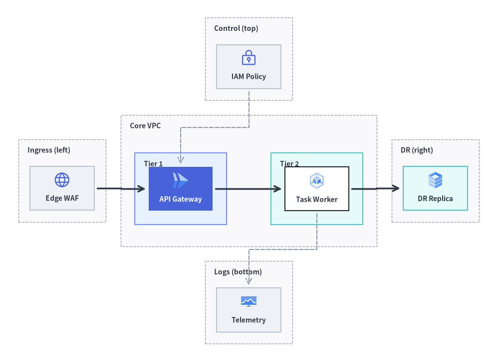
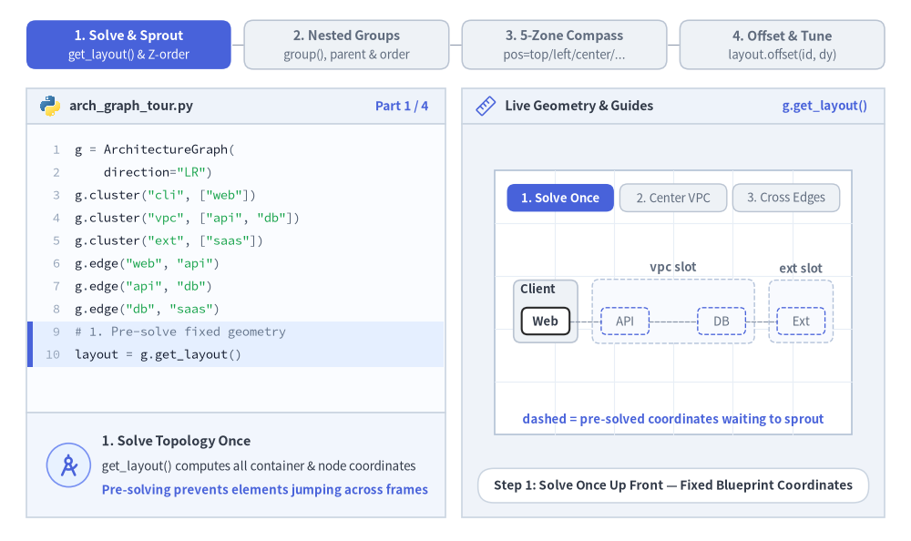
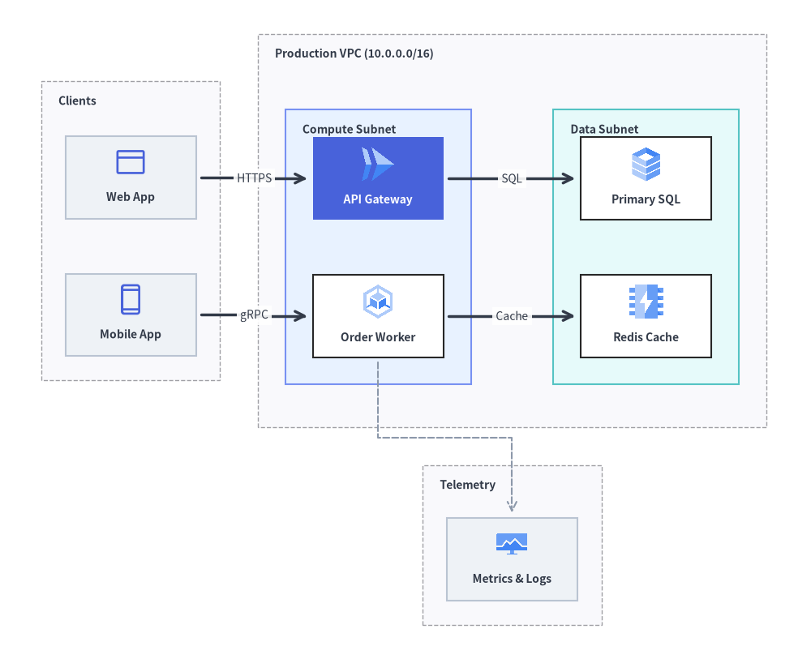
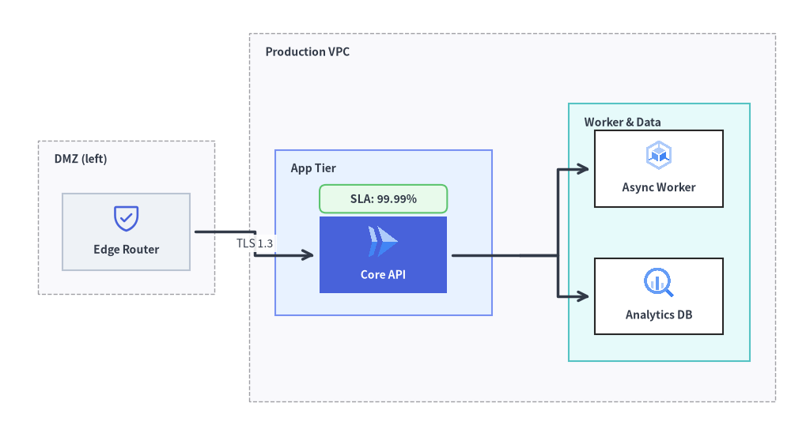

ArchitectureGraph: クラウドトポロジとネストコンテナ
ArchitectureGraph は、クラウドインフラ、VPC トポロジ、マルチゾーンのマイクロサービスアーキテクチャ向けに特化して設計された宣言型の 2 階層（マクロ／ミクロ）座標ソルバーです。
ネストされたグループを平坦化したり境界ボックスを崩したりしがちな汎用 DAG ソルバーとは異なり、ArchitectureGraph は 2 つの階層フェーズで座標を計算します。まず親コンテナ内部にノードと子クラスタをパッキングし（ミクロレイアウト）、次にトップレベルのコンテナを 5 ゾーンコンパス（pos="left" | "center" | "right" | "top" | "bottom"）上に配置して直交ハイウェイルーティングを行います（マクロレイアウト）。layout = g.get_layout() を ArchitectureDiagram と組み合わせることで、計算された座標に公式クラウドアイコンカード（GcpIcon、PhosphorIcon）やネストされた NodeGroup 境界を描画できます。

Source Code
from drawlib.canvas import save, setup
from drawlib.diagrams.architecture import ArchitectureDiagram, GcpIcon, Node, NodeGroup, PhosphorIcon
from drawlib.graph import ArchitectureGraph
from drawlib.styles import Styles
setup(width=136, height=99)
# Step 1: Solve 5-zone compass & nested container coordinates
g = ArchitectureGraph(
direction="LR",
container_sep=4.0,
default_node_width=17.5,
default_node_height=12.0,
)
# 1. Top Zone (pos="top")
g.cluster("top_zone", ["iam"], pos="top", padding=3.2, header_height=4.2)
# 2. Left Zone (pos="left")
g.cluster("left_zone", ["waf"], pos="left", padding=3.2, header_height=4.2)
# 3. Center Zone (pos="center") with two nested sub-clusters (parent="core", order=1 & 2)
g.group("core", pos="center", padding=3.8, header_height=4.5)
g.cluster("tier1", ["api"], parent="core", order=1, padding=3.8, header_height=4.2)
g.cluster("tier2", ["worker"], parent="core", order=2, padding=3.8, header_height=4.2)
# 4. Right Zone (pos="right")
g.cluster("right_zone", ["dr_replica"], pos="right", padding=3.2, header_height=4.2)
# 5. Bottom Zone (pos="bottom")
g.cluster("bottom_zone", ["obs"], pos="bottom", padding=3.2, header_height=4.2)
# Connect across all 5 compass zones
g.edge("waf", "api")
g.edge("api", "worker")
g.edge("worker", "dr_replica")
g.edge("iam", "api")
g.edge("worker", "obs")
layout = g.get_layout()
# Step 2: Render containers and cloud icon nodes with ArchitectureDiagram
d = ArchitectureDiagram(
node_style=Styles.Primary,
node_text_style=Styles.DarkBold.patch(text_size=10.0),
edge_style=Styles.DarkBold,
edge_text_style=Styles.Dark.patch(text_size=10.0),
node_card_style=Styles.Neutral,
)
hdr_st = Styles.DarkBold.patch(text_size=10.0, halign="left", valign="top")
c_top = layout.clusters["top_zone"]
grp_top = d.add(NodeGroup("Control (top)", width=c_top.width, height=c_top.height, text_style=hdr_st), xy=c_top.bottom_left)
c_left = layout.clusters["left_zone"]
grp_left = d.add(NodeGroup("Ingress (left)", width=c_left.width, height=c_left.height, text_style=hdr_st), xy=c_left.bottom_left)
c_core = layout.clusters["core"]
grp_core = d.add(
NodeGroup("Core VPC", width=c_core.width, height=c_core.height, text_style=hdr_st),
xy=c_core.bottom_left,
)
c_t1 = layout.clusters["tier1"]
grp_t1 = grp_core.add(
NodeGroup("Tier 1", width=c_t1.width, height=c_t1.height, style=Styles.PrimaryNeutral, text_style=hdr_st),
xy=c_t1.local_bottom_left,
)
c_t2 = layout.clusters["tier2"]
grp_t2 = grp_core.add(
NodeGroup("Tier 2", width=c_t2.width, height=c_t2.height, style=Styles.SecondaryNeutral, text_style=hdr_st),
xy=c_t2.local_bottom_left,
)
c_right = layout.clusters["right_zone"]
grp_right = d.add(NodeGroup("DR (right)", width=c_right.width, height=c_right.height, text_style=hdr_st), xy=c_right.bottom_left)
c_bot = layout.clusters["bottom_zone"]
grp_bot = d.add(NodeGroup("Logs (bottom)", width=c_bot.width, height=c_bot.height, text_style=hdr_st), xy=c_bot.bottom_left)
n_iam = grp_top.add(Node("IAM Policy", *layout["iam"].size, icon=PhosphorIcon.LOCK_KEY, icon_size=4.8), xy=layout["iam"].local_xy)
n_waf = grp_left.add(Node("Edge WAF", *layout["waf"].size, icon=PhosphorIcon.GLOBE, icon_size=4.8), xy=layout["waf"].local_xy)
n_api = grp_t1.add(
Node(
"API Gateway",
*layout["api"].size,
icon=GcpIcon.CLOUD_RUN,
icon_size=5.0,
style=Styles.White,
text_style=Styles.WhiteBold.patch(text_size=10.0),
card_style=Styles.PrimaryFlat,
),
xy=layout["api"].local_xy,
)
n_wrk = grp_t2.add(
Node("Task Worker", *layout["worker"].size, icon=GcpIcon.GOOGLE_KUBERNETES_ENGINE, icon_size=5.0, card_style=Styles.White),
xy=layout["worker"].local_xy,
)
n_dr = grp_right.add(
Node("DR Replica", *layout["dr_replica"].size, icon=GcpIcon.CLOUD_SQL, icon_size=5.0, card_style=Styles.SecondaryNeutral),
xy=layout["dr_replica"].local_xy,
)
n_obs = grp_bot.add(
Node("Telemetry", *layout["obs"].size, icon=GcpIcon.CLOUD_MONITORING, icon_size=4.8),
xy=layout["obs"].local_xy,
)
d.connect(n_waf, n_api, padding=0.8)
d.connect(n_api, n_wrk, padding=0.8)
d.connect(n_wrk, n_dr, padding=0.8)
d.connect(n_iam, n_api, style=Styles.MutedDashed, padding=0.8)
d.connect(n_wrk, n_obs, style=Styles.MutedDashed, padding=0.8)
d.draw(xy=(-5.0, -5.0))
save()
1. 基本概念と基本的な使い方
ArchitectureGraph は、クラウドのレイアウト計算と視覚的なレンダリングを分離します。最初に layout = g.get_layout() を 1 回呼び出して、重なりのないコンテナ枠（c.xy、c.bottom_left、c.local_bottom_left）、ノード中心座標（n.xy、n.local_xy）、および直交経路（e.points）を計算し、その後は背面から前面への厳密な Z オーダー（クラスタ → エッジ → ノード）で描画するか、ArchitectureDiagram へ直接マッピングします。parent と order を使って親 g.group() 内にマルチティアのサブネットをネストしたり、container_sep 回廊間隔を調整しながら 5 ゾーンコンパス（pos="top" | "left" | "center" | "right" | "bottom"）上に周辺サービスを配置したり、接続エッジのポートを同期させたまま layout.offset(id, dx, dy) でレイアウト後の個別ノード位置を微調整したりできます。

2. コンストラクタとコンテナメソッド
from drawlib.graph import ArchitectureGraph
g = ArchitectureGraph(
direction="LR", # "LR" (Left-to-Right) or "TB" (Top-to-Bottom)
container_sep=None, # Gap between top-level containers (auto-scales if None)
edge_routing="orthogonal", # "orthogonal" or "straight"
default_node_width=24.0,
default_node_height=12.0,
)
パラメータリファレンス
| パラメータ | 型 | デフォルト | 説明 |
|---|---|---|---|
direction |
Literal["LR", "TB"] |
"LR" |
主要なマクロフロー軸（"LR" は左から右、"TB" は上から下）。 |
container_sep |
float | None |
None |
トップレベルコンテナ間の固定間隔（None の場合はキャンバスに合わせて自動スケーリング）。 |
edge_routing |
Literal["orthogonal", "straight"] |
"orthogonal" |
エッジ経路のルーティング方式（直角ハイウェイルーティングの "orthogonal" または直線の "straight"）。 |
default_node_width |
float |
24.0 |
デフォルトのノード幅（キャンバス単位）。 |
default_node_height |
float |
12.0 |
デフォルトのノード高さ（キャンバス単位）。 |
ネストされたクラスタ、5 ゾーンコンパス配置、ArchitectureDiagram へのマッピング
g.group() や g.cluster() を使用するか、g.node() に直接 group="..." や subgroup="..." を渡すことで、ノードを単一階層またはネストされた 2 階層のコンテナに整理できます。
g.group(id, *, nodes=None, padding=4.0, header_height=3.5, parent=None, order=None, pos=None) -> Cluster: 子クラスタ（parent=id）を保持できるトップレベルまたは親コンテナ（クラウド VPC など）を作成します。g.cluster(id, nodes=None, *, padding=4.0, header_height=3.5, parent=None, order=None, pos=None) -> Cluster: 四方の余白paddingと上部のグループタイトル用余白header_heightを確保したコンテナのバウンディングボックスで、nodesリストを囲みます。parent: 外側を囲む親グループの ID（例:parent="vpc"）。order: 親コンテナ内部で兄弟ティアの並び順を制御する整数ランク（1,2, ...）。pos: キャンバス上のマクロ配置を指定するコンパスゾーン（"left"、"center"、"right"、"top"、"bottom"）。
- ノード宣言時のインライン所属指定（
g.node(id, *, width=None, height=None, group="...", subgroup="...")）:get_layout()の実行時、ArchitectureGraphは各ノードのgroup属性とsubgroup属性を検査します。g.group()やg.cluster()で明示的に作成されていないクラスタ ID が参照されている場合は自動的に登録され、ノードは最も内側のコンテナに追加されます。さらにgroupとsubgroupの両方が指定されている場合、subgroup.parentは自動的にgroupにリンクされます（subgroup.parent = node.group）。 ArchitectureDiagramへのシームレスな座標マッピング:- トップレベルの
NodeGroup:c = layout.clusters["vpc"]→vpc = d.add(NodeGroup("VPC", width=c.width, height=c.height), xy=c.bottom_left) - ネストされた
NodeGroup:sub = layout.clusters["tier1"]→t1 = vpc.add(NodeGroup("Tier 1", width=sub.width, height=sub.height), xy=sub.local_bottom_left) NodeGroup内の子Node:n = layout.nodes["api"]→t1.add(Node("API", *n.size, icon=...), xy=n.local_xy)- トップレベルの
Node:n = layout.nodes["client"]→d.add(Node("Client", *n.size, icon=...), xy=n.xy)
- トップレベルの
3. ネストクラスタを用いたマルチ VPC／マルチティアのクラウドトポロジ
次の例では、外部クライアントゾーン（pos="left"）、ネストされた Compute ティアおよび Data ティア（parent="prod_vpc", order=1, 2）を持つ中央の本番 VPC（pos="center"）、ならびにオブザーバビリティゾーン（pos="bottom"）で構成されるクラウドアーキテクチャ全体の座標を計算し、ArchitectureDiagram で描画します。
from drawlib.canvas import save, setup
from drawlib.diagrams.architecture import ArchitectureDiagram, GcpIcon, Node, NodeGroup, PhosphorIcon
from drawlib.graph import ArchitectureGraph
from drawlib.styles import Styles
setup(width=118, height=96)
# 1. Declare multi-tier topology and solve layout coordinates
g = ArchitectureGraph(
direction="LR",
container_sep=5.5,
default_node_width=19.0,
default_node_height=12.0,
)
# External client zone pinned to the left (vertically stacked)
g.cluster("ext_zone", ["web_client", "mobile_client"], pos="left", padding=3.5, header_height=4.5)
# Central Production VPC with nested Compute and Data tiers
g.group("prod_vpc", pos="center", padding=4.0, header_height=4.8)
g.cluster(
"compute_subnet",
["api_gw", "order_svc"],
parent="prod_vpc",
order=1,
padding=4.0,
header_height=4.5,
)
g.cluster(
"data_subnet",
["orders_db", "redis_cache"],
parent="prod_vpc",
order=2,
padding=4.0,
header_height=4.5,
)
# Shared observability platform pinned to the bottom
g.cluster("obs_zone", ["prometheus"], pos="bottom", padding=3.5, header_height=4.2)
g.edge("web_client", "api_gw")
g.edge("mobile_client", "order_svc")
g.edge("api_gw", "orders_db")
g.edge("order_svc", "redis_cache")
g.edge("order_svc", "prometheus")
layout = g.get_layout()
# 2. Render with ArchitectureDiagram using c.bottom_left, c.local_bottom_left, and n.local_xy
d = ArchitectureDiagram(
node_style=Styles.Primary,
node_text_style=Styles.DarkBold.patch(text_size=10.0),
edge_style=Styles.DarkBold,
edge_text_style=Styles.Dark.patch(text_size=10.0),
node_card_style=Styles.Neutral,
)
hdr_st = Styles.DarkBold.patch(text_size=10.0, halign="left", valign="top")
c_ext = layout.clusters["ext_zone"]
grp_ext = d.add(NodeGroup("Clients", width=c_ext.width, height=c_ext.height, text_style=hdr_st), xy=c_ext.bottom_left)
c_vpc = layout.clusters["prod_vpc"]
grp_vpc = d.add(
NodeGroup("Production VPC (10.0.0.0/16)", width=c_vpc.width, height=c_vpc.height, text_style=hdr_st),
xy=c_vpc.bottom_left,
)
c_comp = layout.clusters["compute_subnet"]
grp_comp = grp_vpc.add(
NodeGroup("Compute Subnet", width=c_comp.width, height=c_comp.height, style=Styles.PrimaryNeutral, text_style=hdr_st),
xy=c_comp.local_bottom_left,
)
c_data = layout.clusters["data_subnet"]
grp_data = grp_vpc.add(
NodeGroup("Data Subnet", width=c_data.width, height=c_data.height, style=Styles.SecondaryNeutral, text_style=hdr_st),
xy=c_data.local_bottom_left,
)
c_obs = layout.clusters["obs_zone"]
grp_obs = d.add(NodeGroup("Telemetry", width=c_obs.width, height=c_obs.height, text_style=hdr_st), xy=c_obs.bottom_left)
web = grp_ext.add(Node("Web App", *layout["web_client"].size, icon=PhosphorIcon.BROWSER, icon_size=5.0), xy=layout["web_client"].local_xy)
mob = grp_ext.add(Node("Mobile App", *layout["mobile_client"].size, icon=PhosphorIcon.DEVICE_MOBILE, icon_size=5.0), xy=layout["mobile_client"].local_xy)
api = grp_comp.add(
Node(
"API Gateway",
*layout["api_gw"].size,
icon=GcpIcon.CLOUD_RUN,
icon_size=5.5,
style=Styles.White,
text_style=Styles.WhiteBold.patch(text_size=10.0),
card_style=Styles.PrimaryFlat,
),
xy=layout["api_gw"].local_xy,
)
wrk = grp_comp.add(
Node("Order Worker", *layout["order_svc"].size, icon=GcpIcon.GOOGLE_KUBERNETES_ENGINE, icon_size=5.5, card_style=Styles.White),
xy=layout["order_svc"].local_xy,
)
db = grp_data.add(
Node("Primary SQL", *layout["orders_db"].size, icon=GcpIcon.CLOUD_SQL, icon_size=5.5, card_style=Styles.White),
xy=layout["orders_db"].local_xy,
)
cache = grp_data.add(
Node("Redis Cache", *layout["redis_cache"].size, icon=GcpIcon.MEMORYSTORE, icon_size=5.5, card_style=Styles.White),
xy=layout["redis_cache"].local_xy,
)
prom = grp_obs.add(
Node("Metrics & Logs", *layout["prometheus"].size, icon=GcpIcon.CLOUD_MONITORING, icon_size=5.0),
xy=layout["prometheus"].local_xy,
)
d.connect(web, api, label="HTTPS", padding=0.8)
d.connect(mob, wrk, label="gRPC", padding=0.8)
d.connect(api, db, label="SQL", padding=0.8)
d.connect(wrk, cache, label="Cache", padding=0.8)
d.connect(wrk, prom, style=Styles.MutedDashed, padding=0.8)
d.draw(xy=(-4.0, -5.0))
save()

4. get_layout() と offset() によるレイアウト後の微調整
自動計算されたトポロジの座標を少しだけ微調整したい場合や、計算されたノード座標にカスタムの drawlib.shapes バッジを重ねたい場合は、layout = g.get_layout() を呼び出したあとに layout.offset(node_id, dx=..., dy=...)（.xy と .local_xy の両方を更新）を適用してから ArchitectureDiagram で描画します。
from drawlib.canvas import save, setup
from drawlib.diagrams.architecture import ArchitectureDiagram, GcpIcon, Node, NodeGroup, PhosphorIcon
from drawlib.graph import ArchitectureGraph
from drawlib.shapes import rectangle
from drawlib.styles import Styles
setup(width=124, height=68)
g = ArchitectureGraph(
direction="LR",
container_sep=5.5,
default_node_width=20.0,
default_node_height=12.0,
)
# Declare containers with subgroup padding and inline node membership
g.cluster("dmz", ["edge_lb"], pos="left", padding=3.8, header_height=4.5)
g.group("vpc", pos="center", padding=4.0, header_height=4.8)
g.cluster("app", ["core_api"], parent="vpc", order=1, padding=7.0, header_height=4.5)
g.cluster("storage", ["worker", "AnalyticsDB"], parent="vpc", order=2, padding=4.2, header_height=4.5)
g.node("edge_lb", group="dmz")
g.node("core_api", group="vpc", subgroup="app")
g.node("worker", group="vpc", subgroup="storage")
g.node("AnalyticsDB", group="vpc", subgroup="storage")
g.edge("edge_lb", "core_api")
g.edge("core_api", "worker")
g.edge("core_api", "AnalyticsDB")
# 1. Compute layout geometry
layout = g.get_layout()
# 2. Nudge the Core API node slightly downward so a badge fits cleanly inside the App Tier
layout.offset("core_api", dx=0.0, dy=-3.5)
# 3. Render with ArchitectureDiagram
d = ArchitectureDiagram(
node_style=Styles.Primary,
node_text_style=Styles.DarkBold.patch(text_size=10.0),
edge_style=Styles.DarkBold,
edge_text_style=Styles.Dark.patch(text_size=10.0),
node_card_style=Styles.Neutral,
)
hdr_st = Styles.DarkBold.patch(text_size=10.0, halign="left", valign="top")
c_dmz = layout.clusters["dmz"]
grp_dmz = d.add(NodeGroup("DMZ (left)", width=c_dmz.width, height=c_dmz.height, text_style=hdr_st), xy=c_dmz.bottom_left)
c_vpc = layout.clusters["vpc"]
grp_vpc = d.add(NodeGroup("Production VPC", width=c_vpc.width, height=c_vpc.height, text_style=hdr_st), xy=c_vpc.bottom_left)
c_app = layout.clusters["app"]
grp_app = grp_vpc.add(
NodeGroup("App Tier", width=c_app.width, height=c_app.height, style=Styles.PrimaryNeutral, text_style=hdr_st),
xy=c_app.local_bottom_left,
)
c_sto = layout.clusters["storage"]
grp_sto = grp_vpc.add(
NodeGroup("Worker & Data", width=c_sto.width, height=c_sto.height, style=Styles.SecondaryNeutral, text_style=hdr_st),
xy=c_sto.local_bottom_left,
)
lb = grp_dmz.add(Node("Edge Router", *layout["edge_lb"].size, icon=PhosphorIcon.SHIELD_CHECK, icon_size=5.0), xy=layout["edge_lb"].local_xy)
api = grp_app.add(
Node(
"Core API",
*layout["core_api"].size,
icon=GcpIcon.CLOUD_RUN,
icon_size=5.5,
style=Styles.White,
text_style=Styles.WhiteBold.patch(text_size=10.0),
card_style=Styles.PrimaryFlat,
),
xy=layout["core_api"].local_xy,
)
wrk = grp_sto.add(
Node("Async Worker", *layout["worker"].size, icon=GcpIcon.GOOGLE_KUBERNETES_ENGINE, icon_size=5.2, card_style=Styles.White),
xy=layout["worker"].local_xy,
)
adb = grp_sto.add(
Node("Analytics DB", *layout["AnalyticsDB"].size, icon=GcpIcon.BIGQUERY, icon_size=5.2, card_style=Styles.White),
xy=layout["AnalyticsDB"].local_xy,
)
ox, oy = -4.0, -5.0
d.connect(lb, api, label="TLS 1.3", padding=0.8)
api.fork([wrk, adb], at_x=85.5, padding=0.8)
d.draw(xy=(ox, oy))
# 4. Overlay an SLA status badge right above the Core API node using computed global coordinates
api_box = layout.nodes["core_api"]
rectangle(
(api_box.x + ox, api_box.top + oy + 2.8),
width=20.0,
height=4.4,
style=Styles.SuccessNeutral.patch(shape_r=1.0),
text="SLA: 99.99%",
text_style=Styles.DarkBold.patch(text_size=10.0),
)
save()

5. ベストプラクティス
- 周辺ゾーンには
posを活用する: メインのリクエストパイプラインはpos="center"（またはpos="left"→pos="center"→pos="right"）に配置し、CI/CD、IAM、オブザーバビリティといった横断的関心事はpos="bottom"やpos="top"に配置すると整理された構造になります。 header_heightで見出し用クリアランスを確保する: 解決されたクラスタをArchitectureDiagramのNodeGroupコンテナとして描画する際は、g.cluster()やg.group()にheader_height=4.2〜4.8を指定し、左上のグループタイトルと子カードが重ならないようにします。- ネストされたグループ内では
.local_bottom_leftと.local_xyを使用する:ArchitectureDiagramは親NodeGroupの左下隅を基準に子要素を配置するため、ネストされたNodeGroupを追加する際は必ずxy=cluster.local_bottom_leftを、NodeGroup内にNodeを追加する際は必ずxy=node.local_xyを渡してください。